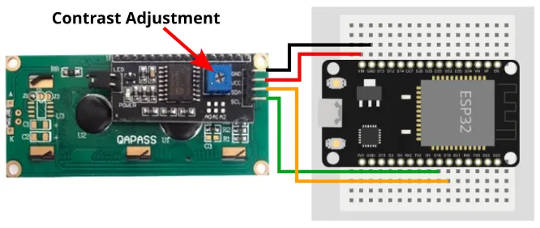
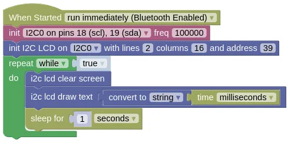

I2C LCD (HD44780 + PCF8574)
The HD44780 is a popular LCD screen, often paired with a PCF8574 IO expander for I2C control. This extensions allows you to write text to such a screen.
Pins
| Pin | Description |
|---|---|
| GND | Ground pin. This should be connected to the GND pin on the ESP32. |
| VCC | Power for the LCD. Connect to 5V. If using USB power, you can connect to the VIN pin on the ESP32. |
| SCL (Signal) | Serial Clock. This is used to communicate with the ESP32 using the I2C protocol. |
| SDA (Signal) | Serial Data. This is used to communicate with the ESP32 using the I2C protocol. |
Wiring
The example below uses power from VIN, this only works if your ESP32 is running on 5V (eg. USB power).

Code
This code will display the time in milliseconds, updating once every second.
Blocks

The draw text block only accepts strings as input, so you must use a convert to block to convert the time (integer) into a string.
You can find the convert to block in the Data category.
Python
import machine
import i2c_lcd
import time
i2c0 = machine.I2C(0, freq=100000)
lcd = i2c_lcd.LCD(i2c0, 39, 2, 16)
while True:
lcd.clear()
lcd.putstr(str(time.ticks_ms()))
time.sleep(1)
Results
You should see the time (...in milliseconds since reset) drawn on the screen and updating every 1 second.
class LCD - control HD44780 LCD screens with PCF8574 IO expander
Constructors
i2c_lcd.LCD(i2c, i2c_addr=39, num_lines=2, num_columns=16)
Creates an LCD object.
The arguments are:
-
i2cAn i2c object. -
i2c_addrThe i2c address of the PCF8574. By default, this should be 39. -
num_linesAn integer specifying the number of lines of text (...not pixels) on the screen. -
num_columnsAn integer specifying the number of character columns on the screen.
Returns an LCD object.
Methods
LCD.clear()
Clears the screen and set the cursor to the top left corner (0, 0).
Returns None.
LCD.show_cursor()
Display the cursor on screen.
Returns None.
LCD.hide_cursor()
Hides the cursor on screen.
Returns None.
LCD.blink_cursor_on()
Makes the cursor blink.
Returns None.
LCD.blink_cursor_off()
Turns cursor blinking off.
Returns None.
LCD.display_on()
Turns on the display.
Returns None.
LCD.display_off()
Turns off the display
Returns None.
LCD.backlight_on()
Turns on the backlight.
Returns None.
LCD.backlight_off()
Turns off the backlight.
Returns None.
LCD.move_to(cursor_x, cursor_y)
Move the cursor to the specified position.
The arguments are:
-
cursor_xAn integer specifying the x position to move to. -
cursor_yAn integer specifying the y position to move to.
Returns None.
LCD.putchar(char)
Draw a character at the current cursor position. This will automatically wrap to the next line when it reaches the end of the line. It will also wrap back to the top of the screen when it reaches the bottom.
The arguments are:
charA string containing a single character.
Returns None.
LCD.putstr(string)
Draw a string starting at the current cursor position. This will automatically wrap to the next line when it reaches the end of the line. It will also wrap back to the top of the screen when it reaches the bottom.
The arguments are:
stringA string containing the text to draw.
Returns None.
LDC.custom_char(location, charmap)
Add a custom char. The HD44780 can store up to 8 custom characters, each character is monochrome and 5x8 pixels.
This can be complicated to use. Refer to the Custom Characters section in the docs here to learn how.
The arguments are:
-
locationA number (0 to 7) specifying the location to store the custom character. -
charmapA bytes object providing the character map of the custom character.
Returns None.